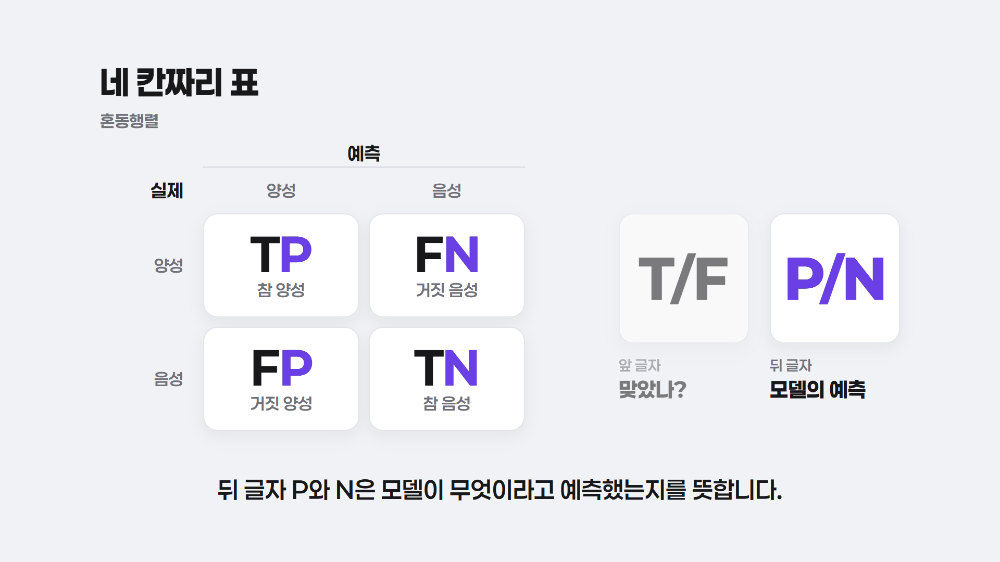
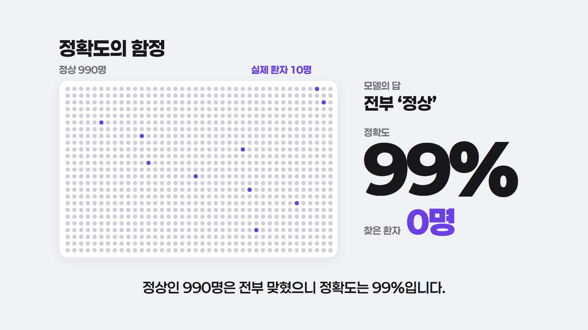
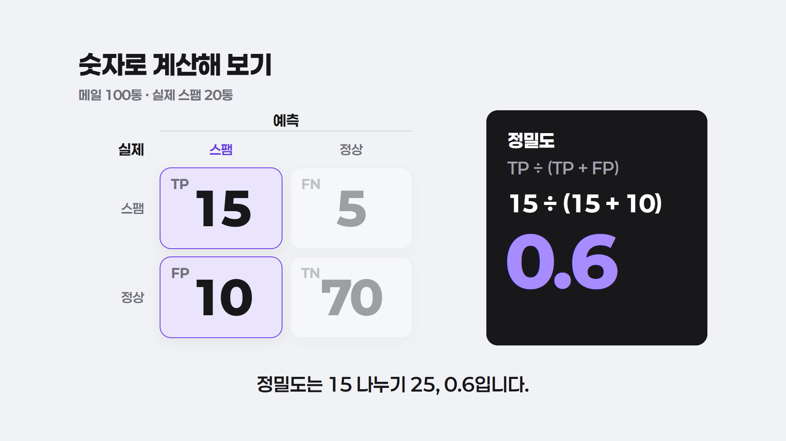

001 정밀도와 재현율 — 정지 컷 확인
연회색 배경·바이올렛 강조·페이퍼로지 글꼴로 다시 찍은 대표 장면 3장입니다. 실제 영상에서는 내레이션 문장에 맞춰 하나씩 등장하고, 이 그림은 그 장면이 다 채워졌을 때의 모습입니다.

01: 혼동행렬과 이름 읽는 요령
문장 15~16
네 칸이 차례로 찍히고, ‘뒤 글자는 예측’이라고 말할 때 P·N만 보라로 바뀝니다.

02: 1000명 중 환자 10명
문장 18~21
점 1000개가 줄줄이 찍히고 환자 10명이 튀어나옵니다. 정확도는 0에서 99%까지 올라가고, 마지막에 ‘찾은 환자 0명’이 찍힙니다.

03: 정밀도 계산
문장 39~41
‘예측 스팸’ 줄만 남고 나머지는 흐려집니다. 오른쪽 어두운 카드에 식 → 대입 → 0.6 순서로 나오고, 이어지는 문장에서 재현율 0.75와 정확도 0.85가 아래 빈자리에 채워집니다.